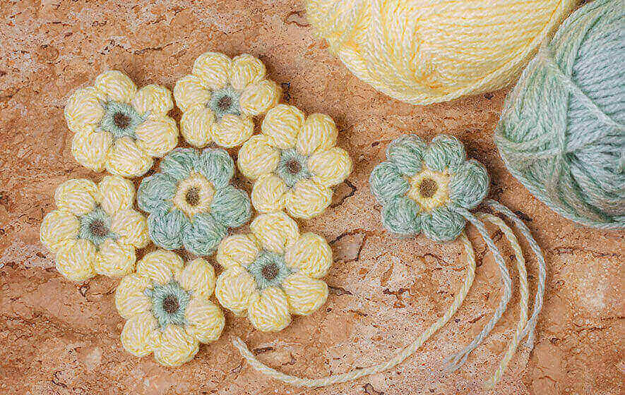

Crochet is a process of creating textiles by using a crochet hook to interlock loops of yarn, thread, or strands of other materials. The name is derived from the French term crochet, which means 'hook'.
Hooks can be made from different materials, such as:
and sizes, and types (in-line, tapered, ergonomic, etc.).